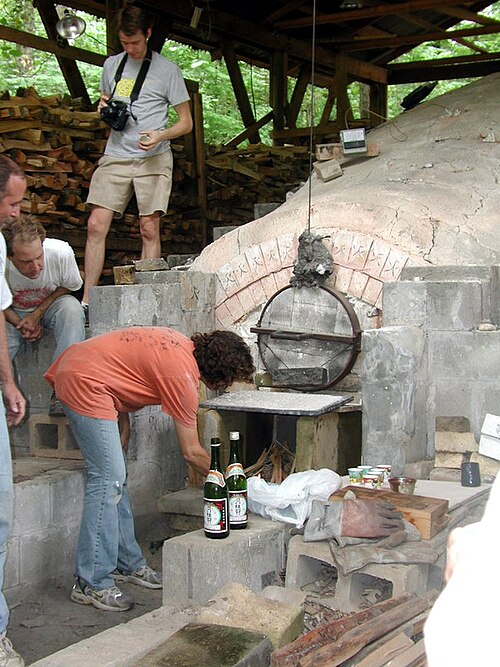
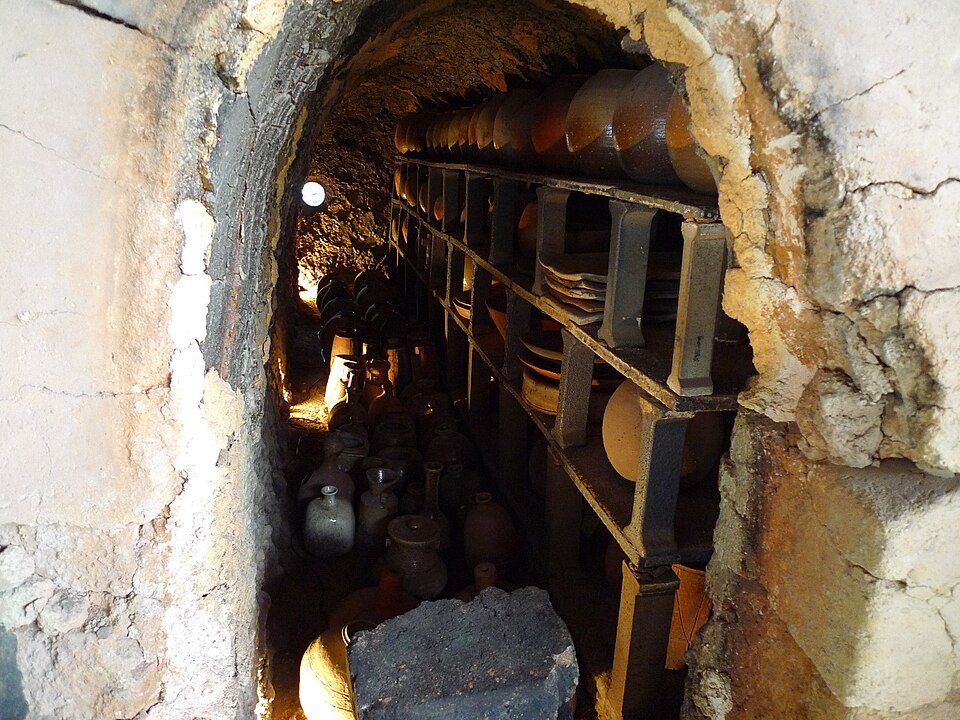
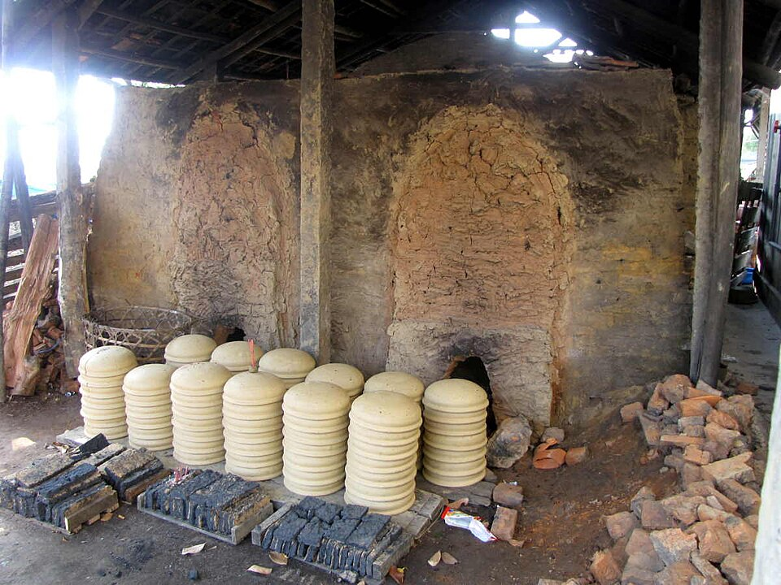
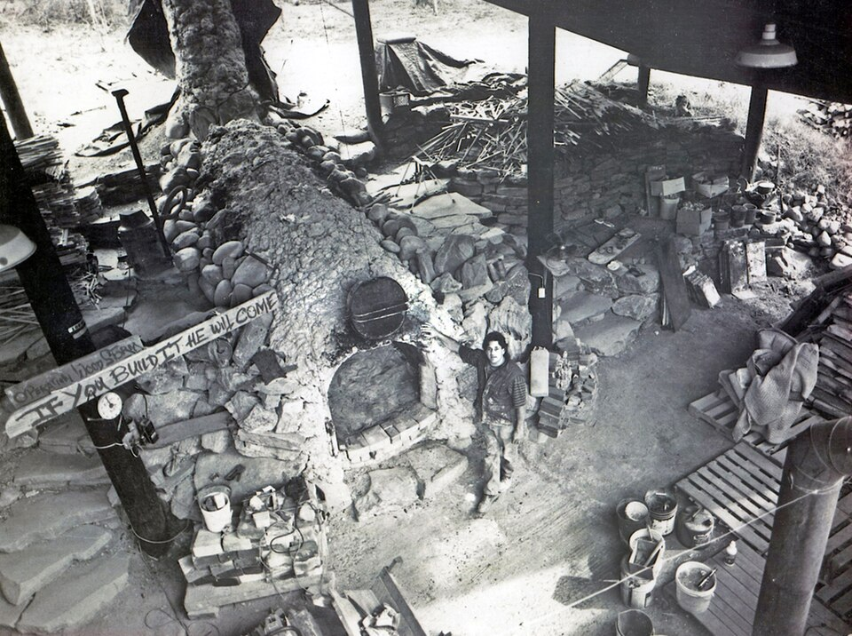

写真：carmichaellibrary／Wikimedia Commons／CC BY 2.0
器の一覧
10月26日（月）に窯出しした器の、残りの在庫です。
器の絵は実測図です（左半分が断面、右半分が外から見た形）。縮尺はすべて同じです。
釉の色
どの器も、4つの釉から選べます（辰砂は5種だけ）。
藁白わらじろ
稲わらの灰を混ぜた白。厚くかかった所は青みが出ます。
12種すべて
飴あめ
鉄で出す飴色。縁の薄い所は黒く、底にたまると明るくなります。
12種すべて
灰釉はいゆう
窯で燃やした赤松の灰から作ります。流れて、くぼみに緑がたまります。
12種すべて
辰砂しんしゃ
銅で出す赤。窯の手前の段でしか赤くならず、1回の窯で20点ほどです。どの器も660円高くなります。
湯呑・豆皿・小鉢・片口・ぐい呑
知っておいてほしいこと
- 同じ釉でも、窯の中の場所で色が変わります。絵の色と同じにはなりません。
- 藁白と灰釉には細かいひび（貫入）が入り、使ううちにお茶の色が染みます。
- 辰砂は、くすんだ赤や、緑の斑点が出ることがあります。
- 電子レンジは使えます。食洗機・オーブン・直火は使えません。
- 底はやすりをかけていますが、塗りの机には敷物をおすすめします。

写真：Motokoka／Wikimedia Commons／CC BY-SA 4.0

写真：作者不明／Wikimedia Commons／CC BY-SA 3.0
送料と届く日
11月8日（日）までのご注文は、
11月9日（月）に発送します。
| お届け先 | 送料（税込） | 11月9日発送で届く日 |
|---|---|---|
| 関東・信越・北陸・中部・近畿 | 1,180円 | 11月10日（火） |
| 東北・中国・四国 | 1,390円 | 11月11日（水） |
| 九州 | 1,610円 | 11月11日（水） |
| 北海道 | 1,940円 | 11月12日（木） |
| 沖縄・離島 | 2,830円 | 11月13日（金）〜 |
送料無料
16,500円以上のご注文は、どこへでも送料無料です。
包み方
1つずつ紙で包み、仕切りのある箱に入れます。箱は器8点まで。9点からは2箱でも送料は1回分です。
割れて届いたら
届いた日から7日以内に、写真を添えてご連絡ください。同じ器を送るか、代金を返します。
返品
色や形が気に入らないときの返品は、届いた日から7日以内・未使用に限ります。送料はご負担ください。
支払い
クレジットカード・銀行振込・代金引換（手数料330円）。
次の窯出しの器
11月27日（金）20時の発売分は、12月2日（水）から順に発送します。
窯焚きの予定
窯を焚くのは月に1回。11月の窯には約380点を詰めます。
- 11月16日（月）〜18日（水）窯詰め。棚に器を並べる
- 11月19日（木）朝6時火入れ。ここから2日半、交代で薪をくべる
- 11月21日（土）夕方1250℃で火を止め、4日かけて冷ます
- 11月25日（水）窯出し。割れ・ゆがみを見て、売れる器を選ぶ
- 11月27日（金）20時このページで発売。
売り切れの色の多くが戻ります

写真：MaryEK／Wikimedia Commons／CC BY-SA 4.0
窯の中の温度は、いつもの焚き方の目安です。薪は赤松で、約60時間焚き続けます。
12月の窯
12月25日（金）20時 発売
火入れは12月17日（木）、窯出しは12月23日（水）。
1月は焚きません
雪で薪を運べないため
1月の発売はありません。12月の窯の在庫を続けて売ります。
2月の窯
2月26日（金）20時 発売
火入れは2月18日（木）、窯出しは2月24日（水）。